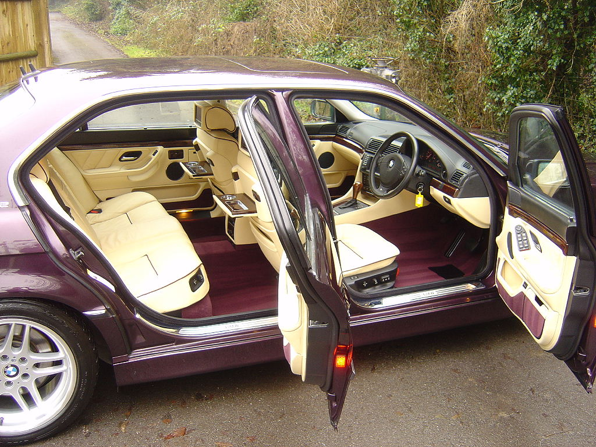
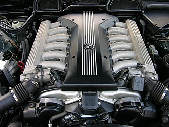
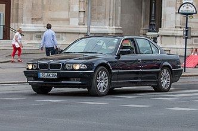

третье поколение люксовых автомобилей 7-й серии, выпускавшихся с 1994 по 2001 год немецким автопроизводителем BMW. Наряду с бензиновыми двигателями, впервые в истории фирмы на автомобили класса люкс стали устанавливать дизельные моторы. Помимо моделей с удлинённой колёсной базой и версий со специальной защитой, выпускался также лимузин. Всего было изготовлено 327,6 тыс. автомобилей.
_20090314_front (1).jpg)
Силовая структура кузова была значительно усилена, особенно в зоне центрального тоннеля, что позволило добиться его угловой жёсткости в 25 000 Нм/град. Это существенно снизило шум и вибрацию, особенно в передней части салона. Новые методы компьютерного проектирования и применение высокопрочных сталей позволили снизить долю кузова в общем весе автомобиля до величины менее чем 20 %.Горизонтальные вставки из дерева располагались не только на передней панели, но и на дверях, разъединяя и объединяя различные по цвету и фактуре зоны сверху и снизу.
Автомобили комплектовались рядными шестицилиндровыми, V-образными восьмицилиндровыми бензиновыми и дизельными двигателями, или двенадцатицилиндровым бензиновым мотором. Все двигатели располагались спереди продольно и состыковывались с пяти или шестиступенчатой механической коробкой передач или пятиступенчатой автоматической. Можно было заказать автоматическую коробку Steptronic с возможностью переключения передач вручную. Ведущими были задние колёса, вращение на которые передавалось с помощью карданного вала. Модель начального уровня 728i (728iL) оборудовалась бензиновым рядным шестицилиндровым двигателем серии M52 рабочим объёмом 2,8 литра мощностью 193 л. с., заимствованным от моделей 328i и 528i. Это был двигатель с алюминиевыми головкой и блоком цилиндров, двумя верхними распредвалами, четырьмя клапанами на цилиндр (DOHC) и фирменной системой изменения фаз газораспределения VANOS.
На автомобиль устанавливалась передняя независимая подвеска с качающимися стойками типа Макферсон с двумя шаровыми шарнирами. К переднему шарниру крепилась поперечная алюминиевая растяжка, к заднему — C-образный качающийся рычаг. Пружины подвески имели бочкообразную форму и навивались из проволоки переменного сечения. Подвеска присоединялась к жёсткому подрамнику, сваренному из труб. Тормозная сила воспринималась нижним трапецеидальным штампованным рычагом специального профиля. Продольные и боковые силы передавались с помощью двух верхних тяг, направляющей и силовой. И, с помощью небольшой дополнительной тяги спереди нижнего рычага, продольные силы напрямую воздействовали на него, без создания ненужных вращающих и раскачивающих моментов. Подвеска крепилась к подрамнику, на который также устанавливалась главная передача. Весь этот задний мост подсобрался и регулировался отдельно, а затем целиком монтировался на автомобиль.
Летом 1994 года были представлены первые модели серии: 730i[37] и за доплату в 10 000 марок — её версия с удлинённой колёсной базой 730iL[38], модель 740i[39] и за доплату в 15 000 марок — её удлинённая версия 740iL[40], все с восьмицилиндровыми моторами и модели с двенадцатицилиндровым двигателем, 750i[41] с, за доплату в 20 000 марок[42] — удлинённой версией 750iL[2]. Осенью 1995 года была представлена модель 728i[43] и её удлинённая версия 728iL[44] с шестицилиндровым двигателем. Весной 1996 года модель 735i[45] со своей удлинённой версией 735iL[46] с новым восьмицилиндровым двигателем заменили модель 730i (730iL). Новый восьмицилиндровый мотор также стали устанавливать на самую успешную модель серии 740i (740iL)[39]. В 1996 году была представлена модель 725tds, первая модель с дизельным двигателем среди автомобилей класса люкс[англ.] фирмы. За ней в 1998 году последовала модель 730d, также с шестицилиндровым дизелем, и ещё одна дизельная модель 740d с новым восьмицилиндровым мотором в 1999 году[47]. В 1997 году стартовало производство огромного лимузина L7 длиной почти 5,4 метра, созданного на базе модели 750iL и использовавшего такой же двенадцатицилиндровый двигател
Вторая страничка Вторая страничка